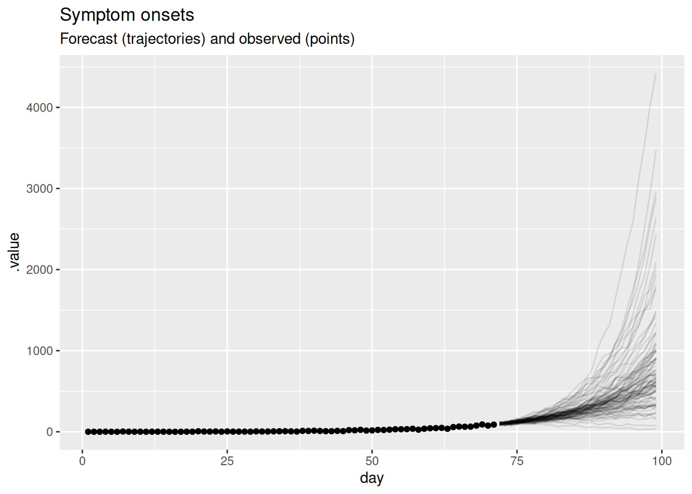
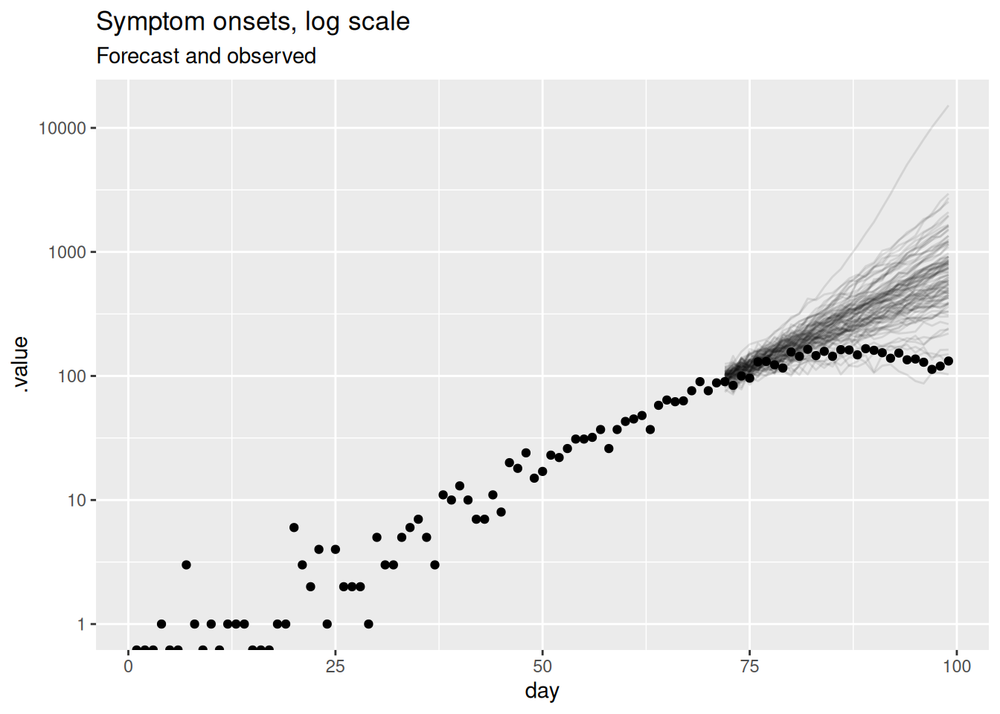
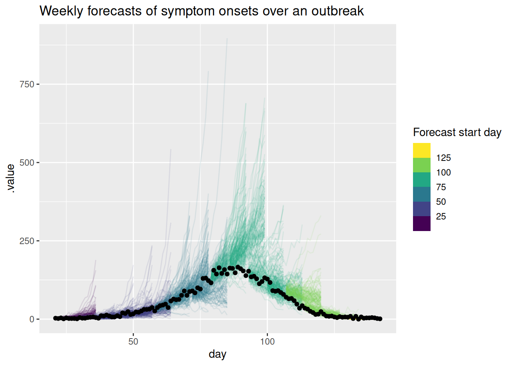
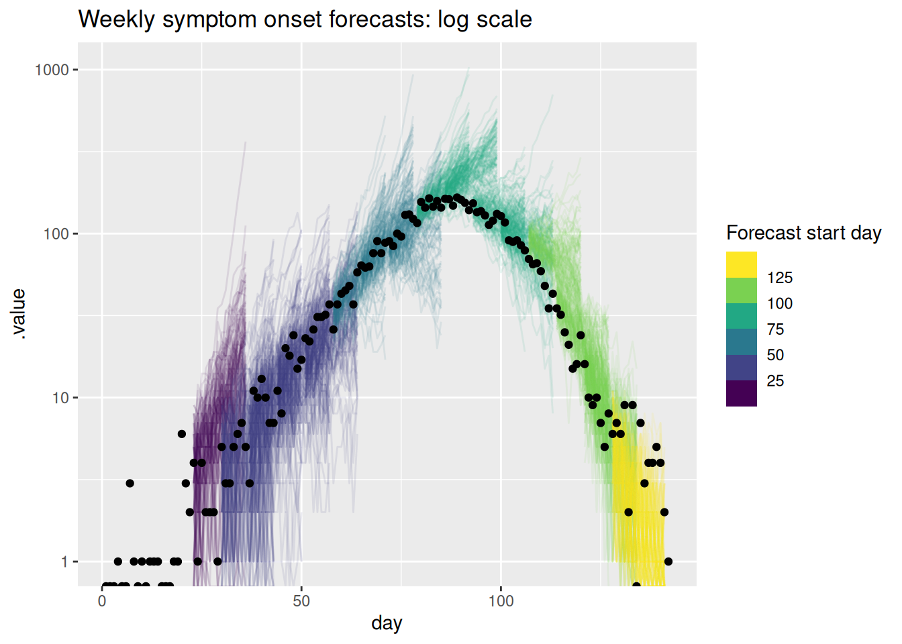

library("nfidd")
library("dplyr")
library("ggplot2")
library("tidybayes")Forecasting concepts
Introduction
Epidemiological forecasts are probabilistic statements about what might happen to population disease burden in the future. In this session we will make some simple forecasts using a commonly used infectious disease model, based on the renewal equation. We will see how we can visualise such forecasts, and visually compare them to what really happened.
Slides
Objectives
The aim of this session is to introduce the concept of forecasting and forecast visualisation using a simple model.
NoteSetup
Source file
The source file of this session is located at sessions/forecast-visualisation.qmd.
Libraries used
In this session we will use the nfidd package to load a data set of infection times and corresponding forecasts, the dplyr package for data wrangling, the ggplot2 library for plotting and the tidybayes package for extracting results of the inference.
Tip
The best way to interact with the material is via the Visual Editor of RStudio.
Initialisation
We set a random seed for reproducibility. Setting this ensures that you should get exactly the same results on your computer as we do. This is not strictly necessary but will help us talk about the models.
set.seed(123)
options(cmdstanr_print_line_numbers = TRUE)What is forecasting?
Forecasting is the process of making predictions about the future based on past and present data. In the context of infectious disease epidemiology, forecasting is usually the process of predicting the future course of some metric of infectious disease incidence or prevalence based on past and present data. Here we focus on forecasting observed data (the number of individuals with new symptom onset) but forecasts can also be made for other quantities of interest such as the number of infections, the reproduction number, or the number of deaths. Epidemiological forecasting is closely related to nowcasting and, when using mechanistic approaches, estimation of the reproduction number. In fact, the model we will use for forecasting is the same as the model we used for nowcasting and estimation of the reproduction number. The only difference is that we will extend the model into the future. In order to make things simpler we will remove the nowcasting part of the model, but in principle all these approaches could be combined in a single model.
Extending a model into the future
The model we introduced in the renewal equation session the reproduction number using a random walk, then used a discrete renewal process to model the number of infections, and convolved these with a delay distribution to model the number of onsets with Poisson observation error. Based on what we found in the nowcasting session this seems like a reasonable model for the data and so we might want to use it to forecast into the future.
We can do this by simulating the generative model forward in time. To do this we use the same model as in the renewal equation session but add a generated quantities block to create the forecasts. This is used in a stan model for any calculations that only depend on other parameter estimates but are not themselves constrained by the data. So what does this look like in code? Lets load in the model again and take a look.
mod <- nfidd_cmdstan_model("estimate-inf-and-r-rw-forecast")
mod 1: functions {
2: #include "functions/convolve_with_delay.stan"
3: #include "functions/renewal.stan"
4: #include "functions/geometric_random_walk.stan"
5: }
6:
7: data {
8: int n; // number of days
9: int I0; // number initially infected
10: array[n] int obs; // observed symptom onsets
11: int gen_time_max; // maximum generation time
12: array[gen_time_max] real gen_time_pmf; // pmf of generation time distribution
13: int<lower = 1> ip_max; // max incubation period
14: array[ip_max + 1] real ip_pmf;
15: int h; // number of days to forecast
16: }
17:
18: transformed data {
19: int m = n + h;
20: }
21:
22: parameters {
23: real<lower = 0> init_R; // initial reproduction number
24: array[m-1] real rw_noise; // random walk noise
25: real<lower = 0, upper = 1> rw_sd; // random walk standard deviation
26: }
27:
28: transformed parameters {
29: array[m] real R = geometric_random_walk(init_R, rw_noise, rw_sd);
30: array[m] real infections = renewal(I0, R, gen_time_pmf);
31: array[m] real onsets = convolve_with_delay(infections, ip_pmf);
32: }
33:
34: model {
35: // priors
36: init_R ~ normal(1, 0.5) T[0, ];
37: rw_noise ~ std_normal();
38: rw_sd ~ normal(0, 0.05) T[0,];
39: obs ~ poisson(onsets[1:n]);
40: }
41:
42: generated quantities {
43: array[h] real forecast;
44: if (h > 0) {
45: for (i in 1:h) {
46: forecast[i] = poisson_rng(onsets[n + i]);
47: }
48: }
49: }Take 5 minutes
What have we changed in the model to make it a forecasting model? Do you see any limitations of this approach?
NoteSolution
- What have we changed in the model to make it a forecasting model?
- Added the
hparameter to the data list to specify the number of days to forecast into the future. - Added the
mparameter as a piece oftransformed data(i.e. a calculation that only uses data) that is the total number of days to include in the model (i.e. the number of days in the data plus the number of days to forecast). mis then used in all arrays in the model rather thann. This means thatrw_noiseis nowm - 1long, andR,onsets,infectionsandonsetsaremlong.- As there are only
nobservations in the data in the likelihood we only use the firstnelements ofonsets. - To include observation error in the forecast a
generated quantitiesblock has been added which takes the lasthonsets as the mean of a Poisson distribution and samples from this distribution to get the forecasted onsets.
- Added the
- Do you see any limitations of this approach?
- Including
hin theparametersandmodelblocks increases the number of parameters and amount of work we have to do when fitting the model. It would be more computationally efficient to have a separate model for forecasting.
- Including
Before we can forecast we need some data to fit the model to. In order to assess the quality of the forecasts we will also need some future (or hold-out) data that we can compare the forecasts to. We will use the same simulated data as in the renewal and nowcasting sessions. We will try to make a forecast on day 71 (assuming we don’t know what the data looks like after that day) as in the nowcasting session.
gen_time_pmf <- make_gen_time_pmf()
ip_pmf <- make_ip_pmf()
onset_df <- simulate_onsets(
make_daily_infections(infection_times), gen_time_pmf, ip_pmf
)
tail(onset_df)# A tibble: 6 × 3
day onsets infections
<dbl> <int> <int>
1 137 4 5
2 138 4 1
3 139 5 4
4 140 4 1
5 141 2 1
6 142 1 0## create hold out dataset
cutoff <- 71
filtered_onset_df <- onset_df |>
filter(day <= cutoff)Fitting the model and forecast for 28 days into the future
We can now fit the model to the data and then make a forecast. This should look very similar to the code we used in the renewal session but with the addition of a non-zero h in the data list.
horizon <- 28
data <- list(
n = nrow(filtered_onset_df),
I0 = 1,
obs = filtered_onset_df$onsets,
gen_time_max = length(gen_time_pmf),
gen_time_pmf = gen_time_pmf,
ip_max = length(ip_pmf) - 1,
ip_pmf = ip_pmf,
h = horizon # Here we set the number of days to forecast into the future
)
rw_forecast <- nfidd_sample(
mod, data = data, adapt_delta = 0.95,
init = \() list(init_R = 1, rw_sd = 0.01)
)rw_forecast variable mean median sd mad q5 q95 rhat ess_bulk ess_tail
lp__ 3218.22 3218.43 7.16 7.38 3206.36 3229.32 1.01 888 1309
init_R 1.53 1.52 0.10 0.08 1.39 1.71 1.00 1606 1153
rw_noise[1] 0.05 0.02 1.00 0.96 -1.67 1.69 1.00 3227 1350
rw_noise[2] 0.04 0.06 1.00 1.01 -1.63 1.68 1.00 3488 1429
rw_noise[3] 0.00 0.03 0.98 0.96 -1.64 1.67 1.00 3366 1517
rw_noise[4] -0.05 -0.04 1.01 0.97 -1.72 1.61 1.00 3156 1356
rw_noise[5] -0.04 -0.04 0.94 0.93 -1.57 1.51 1.01 3094 1559
rw_noise[6] -0.13 -0.14 1.02 0.99 -1.78 1.56 1.00 3471 1547
rw_noise[7] -0.14 -0.14 1.01 0.99 -1.82 1.57 1.00 2772 1356
rw_noise[8] -0.18 -0.17 0.96 0.99 -1.72 1.38 1.00 3536 1417
# showing 10 of 426 rows (change via 'max_rows' argument or 'cmdstanr_max_rows' option)
Note
Because this model can struggle to fit to the data, we have increased the value of adapt_delta from its default value of 0.8. This is a tuning parameter that affects the step size of the sampler in exploring the posterior (higher adapt_delta leading to smaller step sizes meaning posterior exploration is slower but more careful).
Visualising the forecast
We can now visualise the forecast. We will first extract the forecast and then plot the forecasted number of symptom onsets alongside the observed number of symptom onsets before the forecast was made.
forecast <- rw_forecast |>
gather_draws(forecast[day]) |>
ungroup() |>
mutate(day = day + cutoff)forecast |>
filter(.draw %in% sample(.draw, 100)) |>
ggplot(aes(x = day)) +
geom_line(alpha = 0.1, aes(y = .value, group = .draw)) +
geom_point(data = filtered_onset_df, aes(x = day, y = onsets), color = "black") +
labs(
title = "Symptom onsets",
subtitle = "Forecast (trajectories) and observed (points)"
)
In this plot, the dots show the data and the lines are forecast trajectories that the model deems plausible and consistent with the data so far.
TipTake 5 minutes
What do you think of this forecast? Does it match your intuition of how this outbreak will continue? Is there another way you could visualise the forecast that might be more informative?
NoteSolution
- The forecast mainly predicts things to continue growing as they have been. However, some of the trajectories are going down, indicating that with some probabilities the outbreak might end.
- Based purely on the data and without knowing anything else about the disease and setting, it is hard to come up with an alternative. The model seems sensible given the available data. In particular, uncertainty increases with increasing distance to the data, which is a sign of a good forecasting model.
- Instead of visualising plausible trajectories we could visualise a cone with a central forecast and uncertainty around it. We will look at this in the next session as an alternative.
If we want to know how well a model is doing at forecasting, we can later compare it do the data of what really happened. If we do this, we get the following plot.
future_onsets <- onset_df |>
filter(day <= cutoff + horizon)
forecast |>
filter(.draw %in% sample(.draw, 100)) |>
ggplot(aes(x = day)) +
geom_line(alpha = 0.1, aes(y = .value, group = .draw)) +
geom_point(data = future_onsets, aes(x = day, y = onsets), color = "black") +
labs(
title = "Symptom onsets",
subtitle = "Forecast (trajectories) and observed (points)"
)
TipTake 5 minutes
What do you think now of this forecast? Did the model do a good job? Again, is there another way you could visualise the forecast that might be more informative?
NoteSolution
- On the face of it the forecast looks very poor with some very high predictions compared to the data.
- Based on this visualisation it is hard to tell if the model is doing a good job but it seems like it is not.
- As outbreaks are generally considered to be exponential processes it might be more informative to plot the forecast on the log scale.
forecast |>
filter(.draw %in% sample(.draw, 100)) |>
ggplot(aes(x = day)) +
geom_line(alpha = 0.1, aes(y = .value, group = .draw)) +
geom_point(data = future_onsets, aes(x = day, y = onsets), color = "black") +
scale_y_log10() +
labs(title = "Symptom onsets, log scale", subtitle = "Forecast and observed")Warning in scale_y_log10(): log-10 transformation introduced infinite values.
This should be a lot more informative. We see that for longer forecast horizons the model is not doing a great job of capturing the reduction in symptom onsets. However, we can now see that the model seems to be producing very reasonable forecasts for the first week or so of the forecast. This is a common pattern in forecasting where a model is good at capturing the short term dynamics but struggles with the longer term dynamics.
Visualising the forecast of the reproduction number
As our forecasting model is based on the reproduction number, we can also visualise the forecast of the reproduction number. This can be helpful for understanding why our forecasts of symptom onsets look the way they do and for understanding the uncertainty in the forecasts. We can also compare this to the “true” reproduction number, estimated once all relevant data is available. To do this, we will fit the model again but with a later cutoff. Then we can compare the reproduction numbers produced as forecasts at the earlier time, with estimates at the later time that used more of the data.
long_onset_df <- onset_df |>
filter(day <= cutoff + horizon)
long_data <- list(
n = nrow(long_onset_df),
I0 = 1,
obs = long_onset_df$onsets,
gen_time_max = length(gen_time_pmf),
gen_time_pmf = gen_time_pmf,
ip_max = length(ip_pmf) - 1,
ip_pmf = ip_pmf,
h = 0
)
rw_long <- nfidd_sample(mod,
data = long_data,
adapt_delta = 0.95,
init = \() list(init_R = 1, rw_sd = 0.01)
)We first need to extract the forecast and estimated reproduction numbers.
forecast_r <- rw_forecast |>
gather_draws(R[day]) |>
ungroup() |>
mutate(type = "forecast")
long_r <- rw_long |>
gather_draws(R[day]) |>
ungroup() |>
mutate(type = "estimate")We can now plot the forecast and estimated reproduction numbers.
forecast_r |>
bind_rows(long_r) |>
filter(.draw %in% sample(.draw, 100)) |>
ggplot(aes(x = day)) +
geom_vline(xintercept = cutoff, linetype = "dashed") +
geom_hline(yintercept = 1, linetype = "dashed") +
geom_line(
aes(y = .value, group = interaction(.draw, type), color = type),
alpha = 0.1
) +
labs(
title = "Estimated R",
subtitle = "Estimated over whole time series (red), and forecast (blue)"
) +
guides(colour = guide_legend(override.aes = list(alpha = 1)))
Note
The horizontal dashed line at 1 represents the threshold for epidemic growth. If the reproduction number is above 1 then the epidemic is growing, if it is below 1 then the epidemic is shrinking. The vertical dashed line represents the point at which we started forecasting.
TipTake 5 minutes
Can you use this plot to explain why the forecast of onsets looks the way it does?
NoteSolution
- When both models are being fit to data (i.e before the vertical dashed line) the forecast and estimated reproduction numbers are very similar.
- For short-term forecasts \(R_t\) estimates continue to be fairly similar.
- However, the estimates have a consistent downwards trend which is not captured by the forecast (which looks like it has a constant mean value with increasing uncertainty).
- This explains the divergence between the forecast and the data as the horizon increases.
- It looks like only a relatively small number of forecast \(R_t\) trajectories grow to be very large but these are enough to visually dominate the forecast of onsets on the natural scale.
- The performance we are seeing here makes sense given that random walks are defined to have a constant mean and increasing variance.
We managed to learn quite a lot about our model’s forecasting limitations just looking at a single forecast using visualisations. However, what if we wanted to quantify how well the model is doing? In order to do that we need to look at multiple forecasts from the model.
Visualising multiple forecasts from a single model
As for a single forecast, our first step is to visualise the forecasts as this can give us a good idea of how well the model is doing without having to calculate any metrics.
rw_forecasts |>
filter(.draw %in% sample(.draw, 100)) |>
ggplot(aes(x = day)) +
geom_line(
aes(y = .value, group = interaction(.draw, origin_day), col = origin_day),
alpha = 0.1
) +
geom_point(
data = onset_df |>
filter(day >= 21),
aes(x = day, y = onsets), color = "black") +
scale_color_binned(type = "viridis") +
labs(title = "Weekly forecasts of symptom onsets over an outbreak",
col = "Forecast start day")
As for the single forecast it may be helpful to also plot the forecast on the log scale.
rw_forecasts |>
filter(.draw %in% sample(.draw, 100)) |>
ggplot(aes(x = day)) +
geom_line(
aes(y = .value, group = interaction(.draw, origin_day), col = origin_day),
alpha = 0.1
) +
geom_point(data = onset_df, aes(x = day, y = onsets), color = "black") +
scale_y_log10() +
scale_color_binned(type = "viridis") +
labs(title = "Weekly symptom onset forecasts: log scale",
col = "Forecast start day")Warning in scale_y_log10(): log-10 transformation introduced infinite values.
log-10 transformation introduced infinite values.
TipTake 5 minutes
What do you think of these forecasts? Are they any good? How well do they capture changes in trend? Does the uncertainty seem reasonable? Do they seem to under or over predict consistently? Would you visualise the forecast in a different way?
NoteSolution
What do you think of these forecasts?
- We think these forecasts are a reasonable place to start but there is definitely room for improvement.
Are they any good?
- They seem to do a reasonable job of capturing the short term dynamics but struggle with the longer term dynamics.
How well do they capture changes in trend?
- There is little evidence of the model capturing the reduction in onsets before it begins to show in the data.
Does the uncertainty seem reasonable?
- On the natural scale it looks like the model often over predicts. Things seem more balanced on the log scale but the model still seems to be overly uncertain.
Do they seem to under or over predict consistently?
- It looks like the model is consistently over predicting on the natural scale but this is less clear on the log scale.
Going further
Challenge
- What other ways could we visualise the forecasts - especially if we had forecasts from multiple models and locations, or both?
- Based on these visualisations how could we improve the model?
Methods in practice
- Held, Meyer, and Bracher (2017) makes a compelling argument for the use of probabilistic forecasts and evaluates spatial forecasts based on routine surveillance data.
- Hadley et al. (2025) describes the visualisation of modelling results for national COVID-19 policy and decision makers, with recommendations on what aspects of visuals, graphs, and plots policymakers found to be most helpful in COVID-19 response work.
Wrap up
- Review what you’ve learned in this session with the learning objectives
- Share your questions and thoughts
References
Hadley, Liza, Caylyn Rich, Alex Tasker, Olivier Restif, and Sebastian Funk. 2025. “Visual Preferences for Communicating Modelling: A Global Analysis of COVID-19 Policy and Decision Makers.” medRxiv. https://doi.org/10.1101/2024.11.05.24316774.
Held, Leonhard, Sebastian Meyer, and Johannes Bracher. 2017. “Probabilistic Forecasting in Infectious Disease Epidemiology: The 13th Armitage Lecture.” Statistics in Medicine 36 (22): 3443–60. https://doi.org/10.1002/sim.7363.